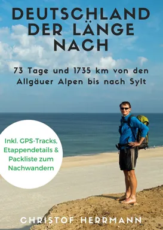
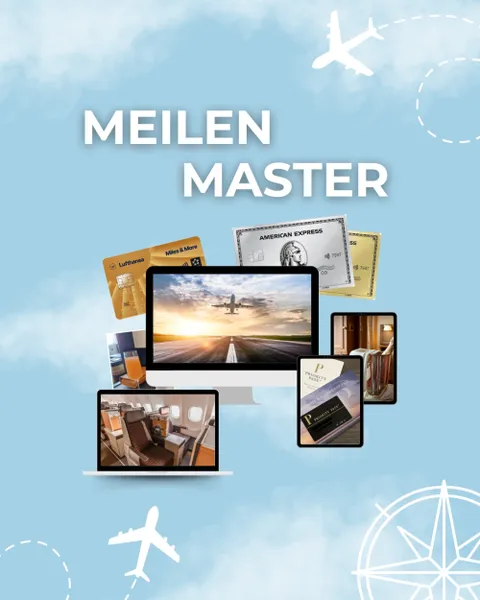

E-Book "Deutschland der Länge nach"
Produktprofil · Marktplatz-Daten 2026-10-14 · Verkaufsseiten-Recherche 2026-10-14 · Kategorien: Travel & Culture
- E-Book "Deutschland der Länge nach" ist ein/e Elektronische Dienstleistung in Travel & Culture, vertrieben über den Digistore24-Marktplatz von Anbieter einfachbewusst, gelistet seit 2018-09-26.
- Listenpreis $9.39 (single payment) — Checkout, Auslieferung und Rückerstattungen laufen über Digistore24 selbst, nicht über den Anbieter.
- Käuferschutz: keine standardisierte Garantie-Formulierung gefunden — Rückerstattungsbedingungen vor der Zahlung auf der offiziellen Seite prüfen.
Interesse an E-Book "Deutschland der Länge nach"? Aktueller Preis, Boni und Garantiebedingungen finden Sie auf der offiziellen Seite des Anbieters:
Offizielle Verkaufsseite ansehen
Affiliate-Link (Werbung) — wir verdienen ggf. eine Provision, ohne Mehrkosten für Sie.

Marktplatz-Daten
| Produkttyp | Elektronische Dienstleistung |
|---|---|
| Preis | $9.39 (Single payment) |
| Garantie/Rückgabe | Laut Verkaufsseite des Anbieters — vor dem Kauf auf der offiziellen Seite prüfen |
| Anbieter | einfachbewusst (gelistet seit 2018-09-26) |
Marktplatz-Beschreibung des Anbieters
2,3 Millionen Schritte | 1735 km | 73 Tage | 8 kg Rucksackgewicht | 7 Bundesländer | 2 Beine | 1½ Paar Wanderschuhe | 1 Ziel Ich erzähle in diesem liebevoll gestalteten E-Book in 18 Berichten und 97 Fotos von meiner 73 Tage und 1735 km lange Wanderung vom südlichsten Punkt Deutschlands , dem Grenzstein 147 am Haldenwanger Eck in den Allgäuer Alpen , zum nördlichsten Punkt Deutschlands am Ellenbogen auf Sylt . Statistiken , die Route auf einer Karte, eine Packliste, die Etappenübersicht inkl. einer Bewertung jeder einzelnen Etappe und GPS-Tracks der kompletten Route gibt es obendrauf. Das E-Book "Deutschland der Länge nach – 73 Tage und 1735 km von den Allgäuer Alpen bis nach Sylt" kommt als PDF mit 99 Seiten . Bewerbe mein Produkt und bekomme 30 % Provision .
Von der Verkaufsseite des Anbieters
Seitentitel: Mein E-Book "Deutschland der Länge nach"
Meta-Beschreibung: Ich bin 1735 km vom südlichsten zum nördlichsten Punkt Deutschlands spaßiert. Was ich in den 10 Wochen alles erlebt habe, erfährst Du in meinem E-Book.
Hauptüberschrift
Mein E-Book Deutschland der Länge nach – 73 Tage und 1735 km von den Allgäuer Alpen bis nach Sylt"
Abschnitts-Überschriften
- Leserstimmen
- Alle Fragen ausführlich beantwortet
- Wer schreibt hier?
- Verbinde Dich mit mir
- Mein Newsletter
- Kategorien
- Das Minimalismus-Projekt" – 7. Auflage meines Ratgebers mit neuem Cover
- „Alpenüberquerung Salzburg – Triest“ ist in der 4., überarbeiteten und erweiterten Auflage erschienen
- Mein Wanderführer Biergartenwanderungen Franken" in der 10. Auflage erhältlich – nun inkl. GPS-Tracks
- Mein Wanderführer Wochenendtouren Franken" ist im Bergverlag Rother erschienen
Einstiegstext
Ich habe dich total gerne begleitet und mich an deinen Berichten und Fotos erfreut! Danke dafür." (Cathrin H.)
Respekt, nach einfach bewusst auf dem Jakobsweg, nun also einfach bewusst durch Deutschland. Bist Dir treu geblieben!" (Michael R.)
Ich hab deine Wanderung live mitverfolgt – ganz großartig, dass du das geschafft hast und danke, dass du mir Deutschland so auf eine ganz spezielle Weise nähergebracht hast!" (Brigitte B.)
Tolle Fotos. Mal ernste, mal amüsante, aber immer ehrliche Beschreibungen. Die GPS-Tracks und die Bewertung der Etappen sind für mich besonders hilfreich, da ich die schönsten Abschnitte nachlaufen möchte." (Susanne M.)
Fragen, die die Verkaufsseite beantwortet
- Wie lange warst Du unterwegs?
- Welche Route hast Du genommen?
- Fernwanderer gibt es viele. Was war das Besondere an Deiner Tour?
- Was kostet das E-Book?
- Das E-Book kostet 9,99 €. Wie kann ich bezahlen?
- Wie bekomme ich das E-Book und die GPS-Tracks?
- Gibt es das E-Book auch bei Amazon?
- Ich habe nicht geplant, das E-Book bei Amazon anzubieten. Wird es eine Printausgabe geben?
- Auch das ist nicht geplant. Auf welchen Geräten kann ich das E-Book lesen?
- Kann ich das E-Book ausdrucken?
Recherche-Methode: rohes HTML · 2867 Wörter · Qualität: rich · recherchiert am 2026-10-14. Vollständige Recherche-Datei (MD) ↗
Wie Produkte dieser Art geliefert werden
Allgemeiner Hinweis zu diesem Produkttyp (keine anbieterspezifische Anleitung): Remote-Dienstleistungen werden elektronisch erbracht — der Anbieter meldet sich nach dem Kauf. Für die genaue Anwendung von E-Book "Deutschland der Länge nach" sind die offizielle Verkaufsseite und die enthaltenen Materialien maßgeblich.
Gut zu wissen
- Keine Garantie-Formulierung in unserer Recherche gefunden — bestätigen Sie das Rückgabefenster auf der offiziellen Seite, bevor Sie kaufen.
Was ist E-Book "Deutschland der Länge nach"?
E-Book "Deutschland der Länge nach" ist ein/e elektronische dienstleistung in der Kategorie Reisen & Kultur des Digistore24-Marktplatzes, veröffentlicht von Anbieter einfachbewusst und im Verkauf seit 2018-09-26. Der Anbieter beschreibt es so: "2,3 Millionen Schritte | 1735 km | 73 Tage | 8 kg Rucksackgewicht | 7 Bundesländer | 2 Beine | 1½ Paar Wanderschuhe | 1 Ziel Ich erzähle in diesem liebevoll gestalteten E-Book in 18 Berichten und 97 Fotos von meiner 73 Tage und 1735 km lange Wanderung vom südl" (Marktplatz-Beschreibung des Anbieters, leicht gekürzt).
E-Book "Deutschland der Länge nach" Preis: was Sie zahlen
Der Marktplatz listet E-Book "Deutschland der Länge nach" zum $9.39 Preis (single payment). Digistore24 fügt im Checkout die gesetzliche Steuer Ihres Landes hinzu — dort sehen Sie den Endbetrag vor der Zahlung. Eine separate Plattformgebühr gibt es nicht; Anbieter können eigene Upsells nach dem Checkout anbieten.
E-Book "Deutschland der Länge nach" Rückerstattung und Geld-zurück-Garantie
Wir haben keine standardisierte Garantie-Formulierung auf der Verkaufsseite gefunden. Rückerstattungen für Digistore24-Käufe laufen über die Plattform: Antrag über den Support-Link in Ihrer Bestell-E-Mail, innerhalb des Garantiezeitfensters, das im Checkout angezeigt wird. Praktischer Rat: Entscheiden Sie innerhalb des Fensters — wenn das Produkt unter den Erwartungen bleibt, erstatten lassen statt irren lassen.
Mechanik im Detail: So funktionieren Digistore24-Rückerstattungen.
Für wen ist E-Book "Deutschland der Länge nach" geeignet?
Basierend auf der Reisen & Kultur-Einordnung und der single payment-Abrechnung richtet sich E-Book "Deutschland der Länge nach" an Käufer, die reisen & kultur-Lösungen suchen zum Einstiegspreis. Der ehrliche Test ist nicht die Kategorie, sondern Ihre eigene Situation: Werden Sie es realistisch innerhalb des Garantiefensters nutzen? Wenn ja, ist der Preis eine Investition; wenn nein, ist er Ballast — unabhängig von der Qualität.
Ist E-Book "Deutschland der Länge nach" seriös? Was Sie vor dem Kauf prüfen
Wir bewerten keine Seriosität — das kann niemand, ohne das Produkt zu nutzen. Prüfbare Punkte, alle auf dieser Seite: die Marktplatz-Historie des Anbieters (im Verkauf seit 2018-09-26), die wörtlichen Verkaufsseiten-Auszüge unten (gekennzeichnet als Anbieteraussagen — deren Werbung, nicht unsere Empfehlung), die Garantiebedingungen im Checkout und die Auslieferungsart. Vorsichtsignale bei jedem Angebot: Countdown-Dringlichkeit gepaart mit vagen Rückerstattungsbedingungen, Testimonials ohne Datum und Anbieterseiten, die den Preis bis zum Checkout verstecken.
Wie kommen Sie nach dem Kauf an E-Book "Deutschland der Länge nach"?
Der Checkout läuft über Digistore24. Nach der Zahlung: Remote-Dienstleistungen werden elektronisch erbracht — der Anbieter meldet sich nach dem Kauf. Bewahren Sie die Bestell-E-Mail auf — sie ist Ihr Schlüssel zum/d zur elektronische dienstleistung, zu Rückerstattungsanträgen und zum Digistore24-Käufersupport.
E-Book "Deutschland der Länge nach" Erfahrungen: so recherchieren Sie richtig
Die meisten „Erfahrungsberichte" zu Marktplatz-Produkten sind Affiliate-Inhalte — einschließlich Seiten wie dieser, die an Käufen mitverdienen. Behandeln Sie jeden Bericht (auch unseren) als Ausgangspunkt und prüfen Sie gegen Primärquellen: die Verkaufsseite des Anbieters, die Digistore24-Rückerstattungsrichtlinie und — für reisen & kultur — unabhängige Communities außerhalb des Affiliate-Ökosystems. Auf dieser Seite sind die Verkaufsseiten-Auszüge unten wörtlich zitiert, damit Sie die Aussagen des Anbieters bewerten können, ohne wegzuklicken.
Wie Sie E-Book "Deutschland der Länge nach" sicher kaufen
- Öffnen Sie die offizielle Verkaufsseite und lesen Sie das vollständige Angebot.
- Bestätigen Sie Endpreis und Garantiezeitfenster auf der Digistore24-Kassenseite — sie ist bindend, kein Vergleichsportal.
- Zahlen Sie innerhalb des Digistore24-Checkouts (niemals per Überweisung oder Off-Platform-Links).
- Speichern Sie die Bestellbestätigung; notieren Sie die Rückerstattungsfrist im Kalender.
- Prüfen Sie zügig. Der Digistore24-Käufersupport hilft, wenn der Anbieter nicht reagiert.
Vollständiges Recherche-Archiv für dieses Produkt (Markdown: kompletter Marktplatz-Datensatz + wörtliche Verkaufsseiten-Auszüge): E-Book "Deutschland der Länge nach" — vollständiges Datenarchiv (Markdown-Datei: 27900-e-book-deutschland-der-l-nge-nach.md).
- Listenpreis & Abrechnung — Quelle: offizielle Digistore24-Marktplatz-API, Stand 2026-10-14. Maßgeblich für den aktuellen Preis ist immer die Kassenseite.
- Verkaufsseiten-Zitate — Quelle: https://www.einfachbewusst.de/e-book-deutschland-der-laenge-nach/, abgerufen 2026-10-14 (Methode: rohes HTML). Verify: offizielle Seite öffnen.
- Garantie / Rückgabe — vom Anbieter festgelegt; vor dem Kauf auf der Verkaufsseite bestätigen.
- Nicht von uns geprüft: Produktqualität, Ergebnisse, Testimonials — kein Praxistest für dieses Listing durchgeführt.
Häufige Fragen zu E-Book "Deutschland der Länge nach"
Antworten aus dem Marktplatz-Snapshot (2026-10-14) und der Verkaufsseiten-Recherche (2026-10-14); Anbieteraussagen sind inline gekennzeichnet.
Was ist E-Book "Deutschland der Länge nach"?
E-Book "Deutschland der Länge nach" ist ein Angebot des Typs „Elektronische Dienstleistung" im Digistore24-Marktplatz, Anbieter: einfachbewusst, gelistet seit 2018-09-26. Eingepflegt unter Reisen & Kultur. Digistore24 wickelt Checkout, Lieferung und Rückgaben ab.
Wie viel kostet E-Book "Deutschland der Länge nach"?
Der Digistore24-Marktplatz listet es für $9.39 (single payment). Preise legt der Anbieter fest und können sich ändern — der Marktplatz-Eintrag oben zeigt den Schnappschuss; die offizielle Verkaufsseite zeigt den aktuellen Preis.
Gibt es eine Geld-zurück-Garantie für E-Book "Deutschland der Länge nach"?
Unsere Verkaufsseiten-Recherche hat keine explizite Garantie-Formulierung gefunden. Viele Digistore24-Produkte bieten 60 Tage Geld-zurück, aber das legt jeder Anbieter selbst fest — bestätigen Sie es auf der offiziellen Verkaufsseite, bevor Sie kaufen.
Ist E-Book "Deutschland der Länge nach" seriös?
Wir bewerten keine Seriosität — wir veröffentlichen überprüfbare Zahlen: Anbieter einfachbewusst (gelistet seit 2018-09-26), mit der vollständigen Verkaufsseiten-Recherche archiviert auf dieser Seite (Anbieteraussagen als solche gekennzeichnet). Lesen Sie unsere 6-Punkte-Bewertungsmethode und entscheiden Sie anhand der Zahlen — oder diskutieren Sie E-Book "Deutschland der Länge nach" auf GitHub.
Wo kann ich E-Book "Deutschland der Länge nach" sicher kaufen?
Nur über die offizielle Verkaufsseite, die auf dieser Seite verlinkt ist (Checkout und Rückgaben laufen über Digistore24). Prüfen Sie dort Preis und Garantie vor der Bestellung. Der Link ist ein Affiliate-Link — der Kauf unterstützt diese Website ohne Mehrkosten für Sie.
Wie erhalte ich E-Book "Deutschland der Länge nach" nach der Zahlung?
Der Checkout läuft über Digistore24: Nach der Zahlung erhalten Sie Ihren Zugang oder Download per E-Mail und in Ihrem Digistore24-Kundenkonto. Lieferdetails für diesen Produkttyp: Remote-Dienstleistungen werden elektronisch erbracht — der Anbieter meldet sich nach dem Kauf. Bei Problemen kann der Digistore24-Käufersupport Ihre Bestellung wiederherstellen.
Alle 50 Käuferfragen zu Reisen & Kultur — das komplette Kategorie-FAQ.
E-Book "Deutschland der Länge nach" auf Reddit diskutieren
In Community-Threads vergleichen echte Käufer Erfahrungen. Wir verlinken Communities, keine einzelnen Posts — Threads verschwinden, Subreddits bleiben:
- r/travel — deutschsprachige Community mit Diskussionen zu travel & culture.
- Reddit-Suche nach „E-Book "Deutschland der Länge nach"" — Live-Ergebnisse, von uns nicht beeinflusst.
- Top-„Erfahrungs"-Treffer dieses Jahr — selbst nach Aktualität filtern.
Passendes auf Amazon.de
Physische Produkte und Zubehör, die häufig zusammen mit E-Book "Deutschland der Länge nach" gekauft werden:
- Reisezubehör auf Amazon.de — Top-Ergebnisse, Amazon-Ranking.
- Bestseller: Reisezubehör — live Liste von Amazon, von uns nicht kuratiert.
Werbung: Als Amazon-Partner verdient DigistorePicks DE an qualifizierten Käufen (Partner-tag adminstorede-21). Amazon setzt eigene Preise und Provisionen (niedrige einstellige Prozente — weit unter den 30–75% der Digistore24-Anbieter). Amazon ist ein Convenience-Angebot für Sachprodukte, kein Ersatz für das digitale Produkt oben.
Ähnliche Angebote in Reisen & Kultur

Hohe Provision : 50 % Provision auf jede Empfehlung! Statt Holzklasse endlich Business oder First Class Flüge zu Economy Preisen ✈️ Bezahle Business + First Cla
![Goodbye 9 to 5: Digitaler Nomade werden PREMIUM [Onlinekurs]](../assets/products/32101.webp)
Empfehle unser einzigartiges Produkt für alle angehenden digitalen Nomaden mit einer hohen Kaufrate. Deine Vorteile: Exzellente Conversions : Profitiere von uns
![Goodbye 9 to 5:Digitaler Nomade werden STANDARD [Onlinekurs]](../assets/products/32102.webp)
Empfehle unser einzigartiges Produkt für alle angehenden digitalen Nomaden mit einer hohen Kaufrate. Deine Vorteile: Exzellente Conversions : Profitiere von uns

Die ganzheitliche Lösung gegen Flugangst – entwickelt von einem Piloten. Der FlyCalm Ultimate Kurs ist die umfassendste Online-Lösung gegen Flugangst . Er richt
Weitere Angebote von einfachbewusst
Ähnliche Preislage in Reisen & Kultur

Besser reisen und dabei Geld sparen? Kein Problem wenn du weißt wie du mit Alltagsausgaben Meilen sammeln kannst. Diese Meilen kannst du dann nutzen um bis zu 9
Der Low-Budget-Hochzeitsplaner richtet sich an Brautpaare, die schön heiraten möchten, aber nicht unnötig viel Geld ausgeben wollen. Das digitale PDF hilft dabe
Dieses eBook ist ein ehrlicher Erfahrungsbericht aus fünf Jahren Elektromobilität im Alltag . Der Autor teilt reale Erlebnisse mit Elektroautos und beleuchtet p

Leben im Wohnmobil – eine ehrliche Entscheidungsgrundlage (E-Book) Dieses E-Book richtet sich an Menschen, die überlegen, dauerhaft oder längerfristig im Wohnmo
Ähnliche Suchanfragen
Wo Sie es sich ansehen können
Wo Sie es sich ansehen können
Aktuelle Preise, Garantie und Boni finden Sie auf der offiziellen Verkaufsseite:
Offizielle Verkaufsseite ansehen
Das ist ein Affiliate-Link (Werbung) — kaufen Sie darüber, verdienen wir ggf. eine Provision, ohne Mehrkosten für Sie.
Quellen & weiterführende Informationen
- Offizielle Verkaufsseite (aktueller Preis, Garantie, Boni): www.einfachbewusst.de/e-book-deutschland-der-laenge-nach/ (Affiliate-Link)
- Öffentliche Digistore24-Produktseite: checkout-ds24.com/product/241445
- Vollständige Recherche-Datei (Markdown, versioniert): content/products/27900-e-book-deutschland-der-l-nge-nach.md
- Marktplatz-Kategorie: Reisen & Kultur
Wie wir Produkte wie E-Book "Deutschland der Länge nach" bewerten
Sechs Prüfungen, ausschließlich mit offiziellen Marktplatz-Zahlen. Die vollständige Bewertungsmethode lesen · unsere Recherche-Standards & Kennzeichnung.
Fragen oder eigene Erfahrungen mit E-Book "Deutschland der Länge nach"?
Praxis-Tests veröffentlichen wir erst, nachdem wir ein Produkt selbst gekauft haben — aber Ihre Erfahrung hilft anderen Lesern: Diskussion zu E-Book "Deutschland der Länge nach" auf GitHub starten/verfolgen. Falsche Zahl gefunden? Korrektur melden — jede Seite zeigt ihre Datenstände, Korrekturen gelten für die ganze Website.